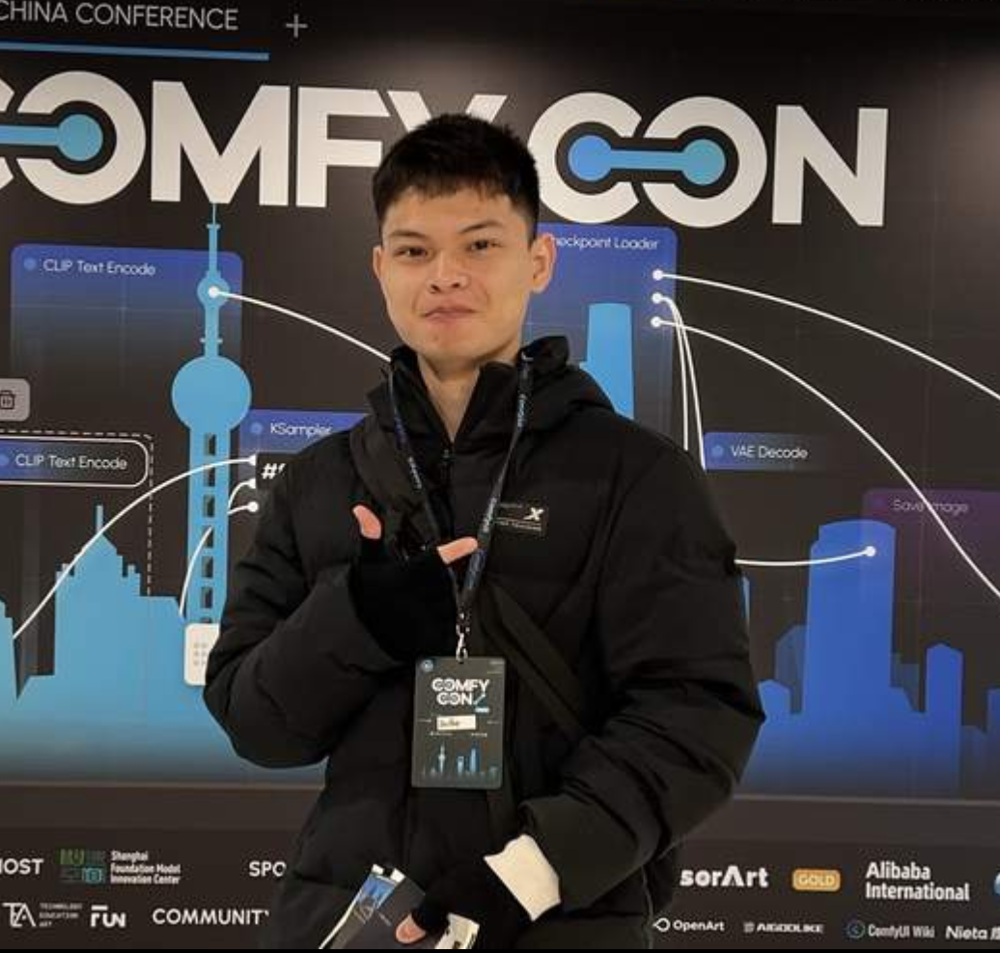

PANDY IN REAL LIFE.设计的直觉。
工程的解法。
我是彭启倍，一名拥有设计背景的 AIGC 算法工程师。
从六年美术科班学习、腾讯视觉设计，到参与百余个 IP 形象项目，我始终关注视觉创意如何落地。此后自学 Python，转向图像模型训练、ComfyUI 工作流与自定义节点开发。
目前在 AI 互动设备领域从事算法特效与工作流搭建，同时开发面向团队和外部客户的 AI 效率工具。
30万+模型累计运行
100+参与 IP 形象项目
6年美术科班背景
模型与社区Liblib 推荐模型作者 · ComfyUI 自定义节点作者
教学与分享深技大特邀 AI 讲师 · 字体帮特邀 AIGC 讲师
合作经历阿里巴巴 · 字节跳动